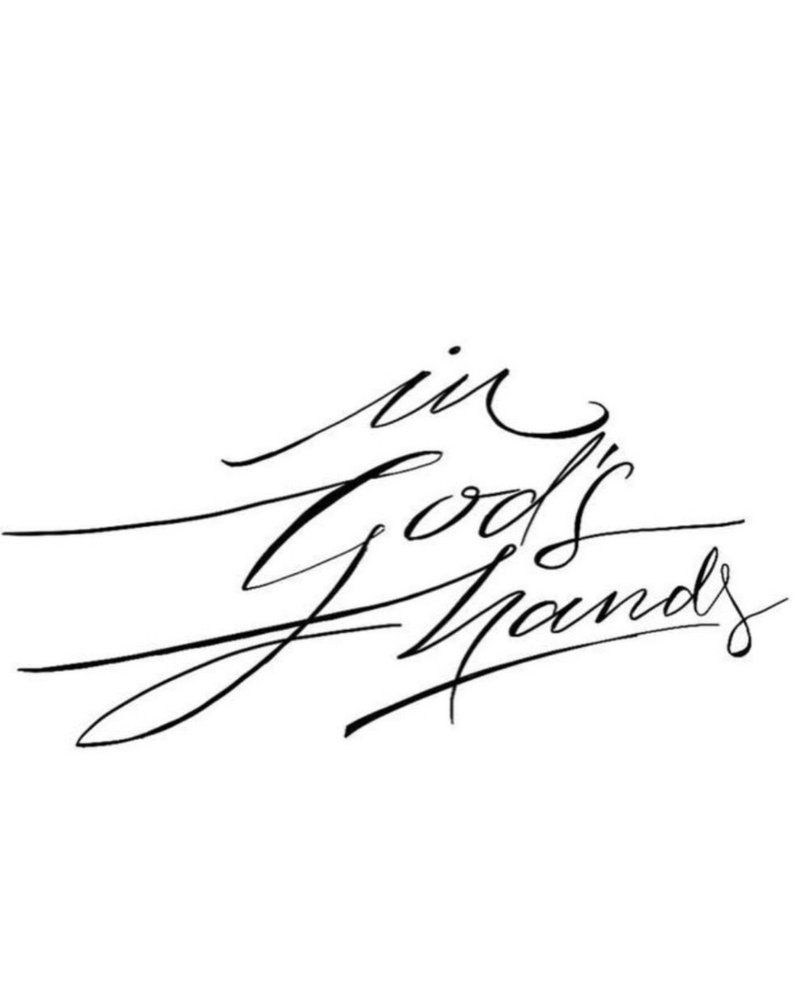
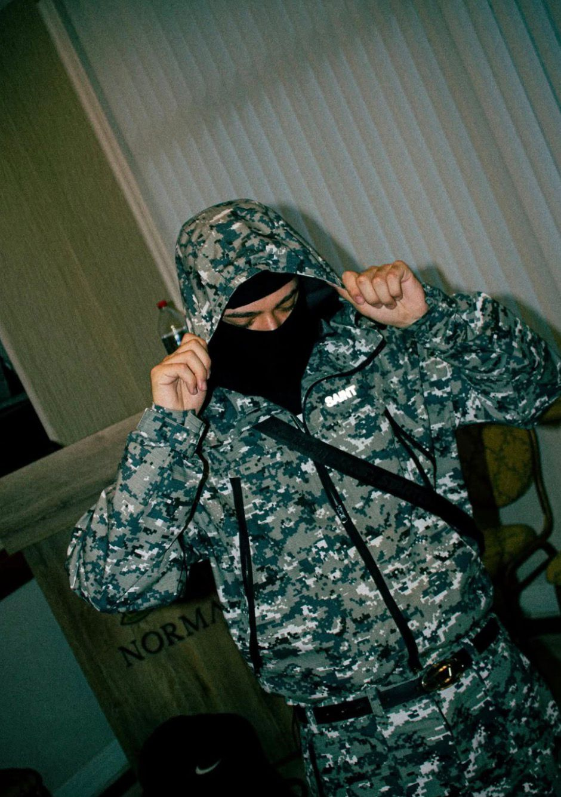
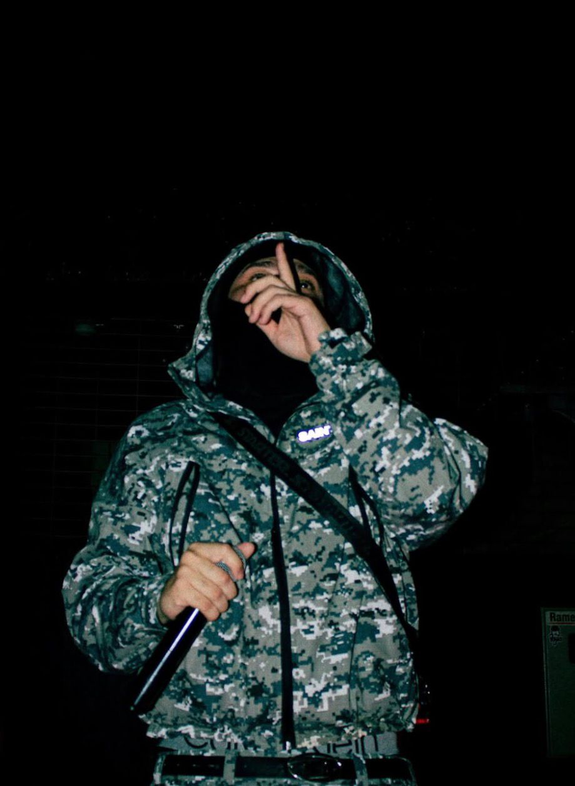
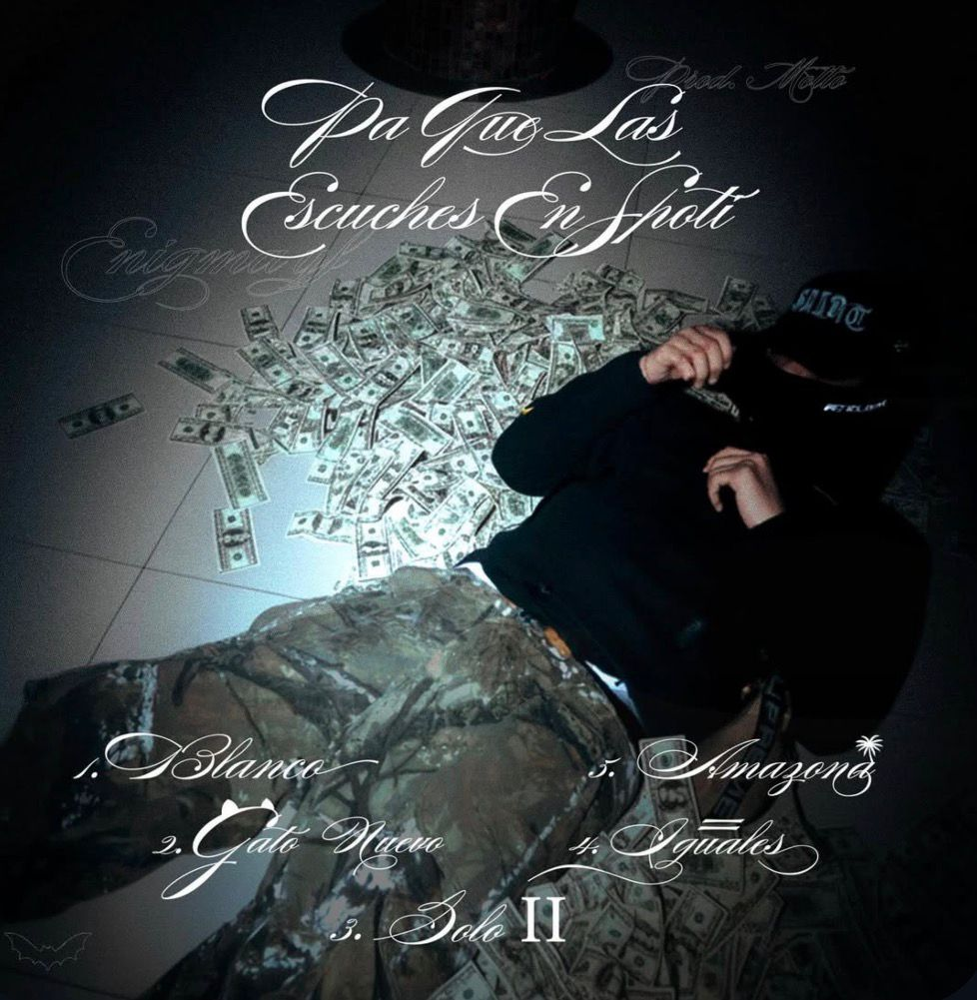
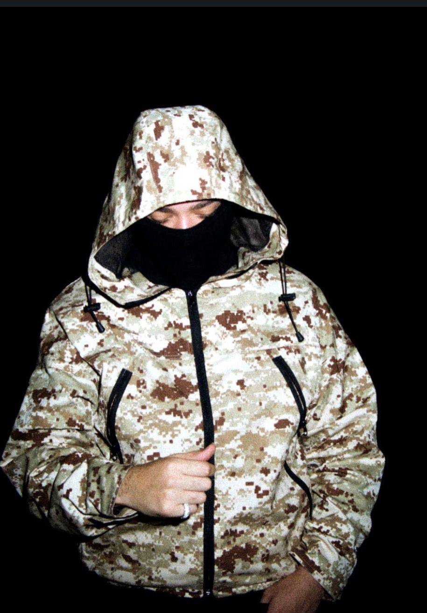
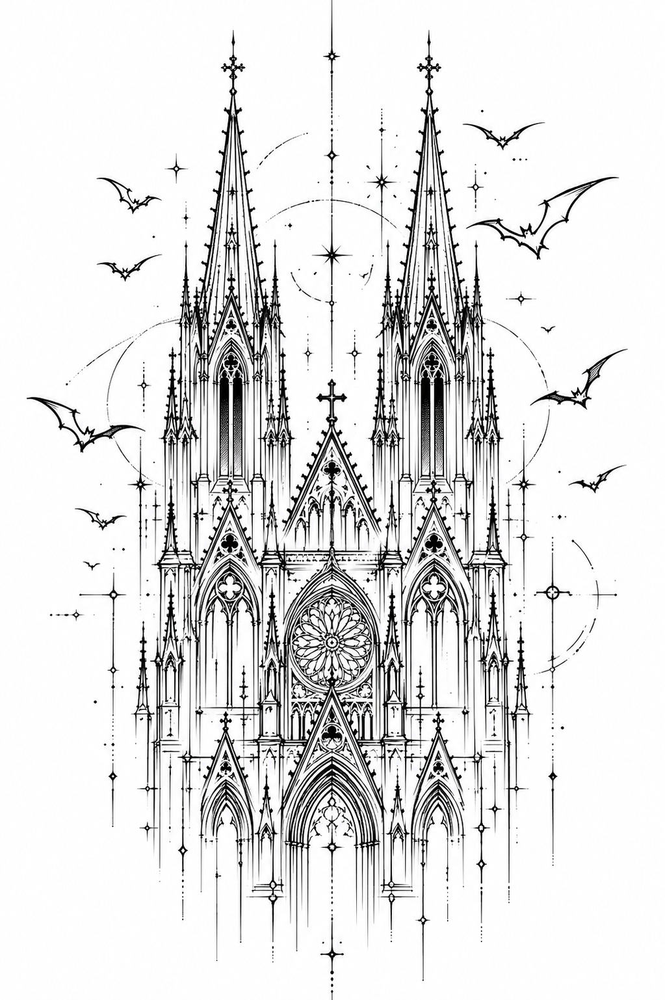
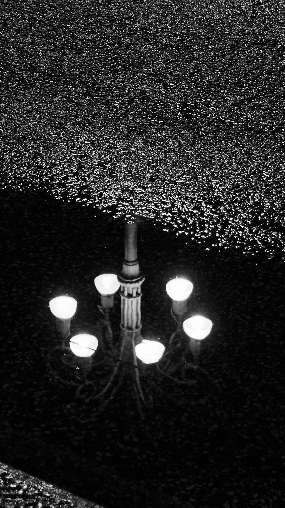

cap. 01 — el portón se abre
Enigmayf
EL JOVEN WAYNE ✦ TALCA ✦ 36°S
MMXXVI
CRÓNICAS DE GOTHAM
ENMASCARADO
Que el arte se juzgue por lo que dice — no por quién lo dice, ni por dónde vino. La máscara es el argumento.
fragmento — manifiesto
Pa Que Las
Escuches en Spoti

Crónicas de Gotham —
una ciudad propia.
Gotham no está en el mapa. Es de noche, siempre. Camina con capucha, mira al suelo, lleva el dedo en los labios. El joven Wayne edifica catedrales con líneas de tinta y duerme entre constelaciones. Lo táctico choca con lo sacro, y de ese choque sale la canción.






in God's hands
La rudeza y la delicadeza viven en la misma imagen. Camo y caligrafía. Pistola y plegaria. Lo que se reza en susurro pesa más que lo que se grita.
189oyentes mensuales
05cortes en el EP
∞universo
la noche te escucha.
ENIGMA yf · MMXXVI
Talca · 36°S 71°W
todos los derechos en silencio